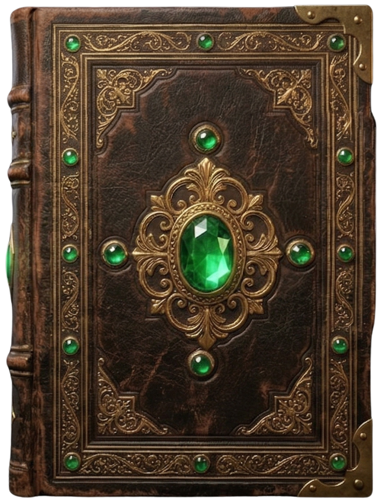
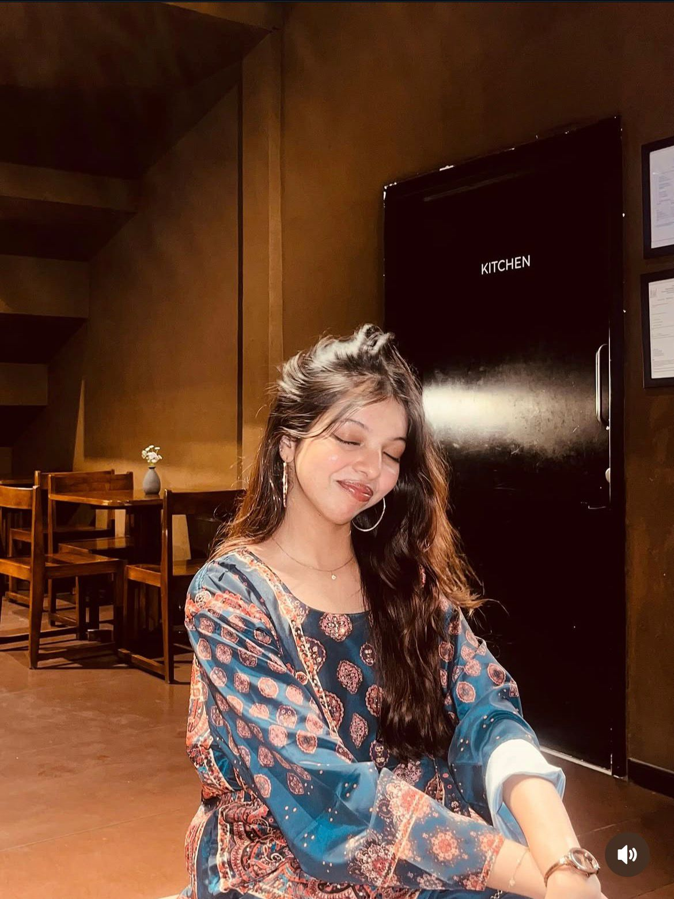
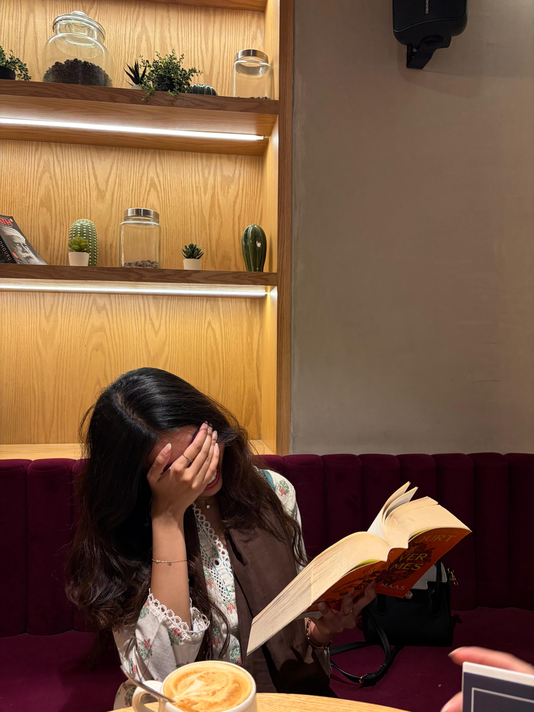
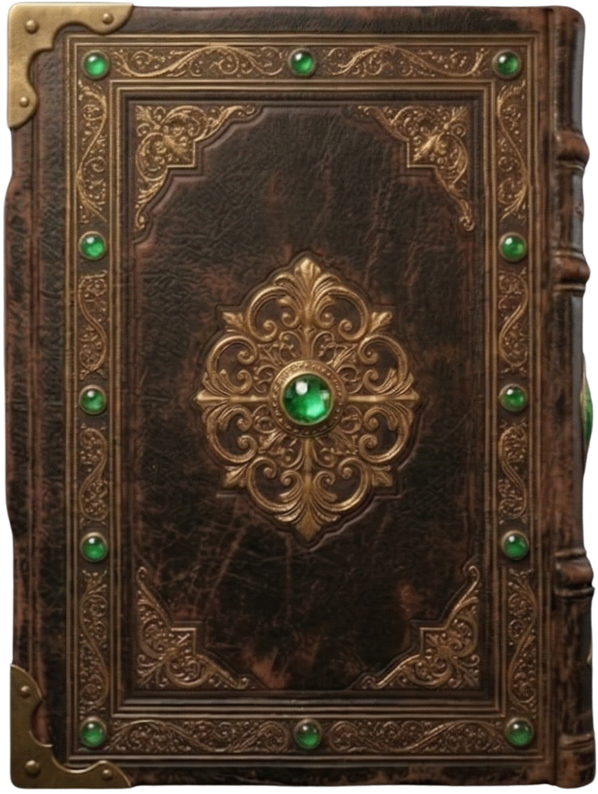

Dear Readers,
Throughout your life, you may have turned the pages of hundreds of books, but I am absolutely sure you
have never come across a tale quite like this one.
Tell me, what comes to mind when you hear the term "baddie"? Simply put, a baddie is an effortlessly stunning, fiercely confident girl who always looks flawless and owns her power.
Baddie e Hyderabad. Baddie e Hyderabad, also known as Sakina Khan, is the ultimate baddie of the city. To truly describe her beauty requires the golden words once reserved for the magnificent queens of antiquity. She possesses a majestic radiance that rivals the glow of the moon on a cloudless night. With a countenance that commands breathless reverence and an elegance that flows like spun silk, her visage is nothing short of imperial. She does not merely exist in a space; she reigns over it, draped in a breathtaking grandeur that leaves the world entirely spellbound.
Just cast your eyes upon the portrait gracing the opposite page. There sits the Baddie e Hyderabad in all her effortless glory. Notice the cascade of her dark, silken waves framing a face that seems sculpted by the very hands of art. Even in the quiet, dim warmth of an ordinary room, she radiates an ethereal glow, her mere presence transforming the space into a royal court. There is a serene, sovereign grace in her posture—a quiet confidence that needs no introduction. With a gaze that holds a captivating depth and a delicate, flawless charm that defies mortal comprehension, she proves that true majesty requires no crown; it is carried entirely in her aura.
Underneath the grand title and the flawless aura lies a story that began on the 5th of April, 2005. On this day, the historic city of Hyderabad welcomed a magnificent new light when Sakina Khan was born, arriving as a profound blessing to her beloved parents, Omar Ali Khan and Farheen Ghani.
Even in her earliest years, Sakina was utterly captivating. She was a wonderfully radiant child, possessing a cute, innocent charm that could easily melt the sternest of hearts. Yet, behind that angelic smile lay a delightfully notorious spirit. She was a little whirlwind of playful mischief, always keeping her family on their toes with her clever antics and bright, boundless energy.
But perhaps her most defining trait—one that blossomed in childhood and remains her greatest crown today—is her golden heart. To her friends, she has always been a fiercely cherished treasure. Deeply loved by all who know her, Sakina is the kind of companion who is simply always there, standing as an unshakeable pillar of love and support for those lucky enough to be in her inner circle.
As she grew, so did her adventurous soul. She possesses a deep love for exploring the world alongside her parents, finding joy in every journey they take together. Yet, the bond she shares with her mother is something truly extraordinary. Far beyond a traditional relationship, her mother is her absolute best friend and closest confidante. Whether they are uncovering hidden gems in the city or simply enjoying life's quiet moments, barely a day goes by without the two of them embarking on some beautiful new endeavor together.
This radiant energy naturally spills over into her friendships. When she is not side-by-side with her mother, she can usually be found creating absolute magic with her two dearest friends, Juweria and Zara. Together, this dynamic trio is an unstoppable force of joy and laughter. They are forever dreaming up something incredibly fun to do, turning even the most ordinary afternoons into unforgettable adventures and proving that a true queen is only as strong as the brilliant circle she keeps.

To truly know Sakina is to understand that her captivating beauty is merely the first layer of her majesty. Beneath that flawless exterior lies a mind of striking brilliance. Excellence is simply her standard. In the classroom, her intellect shines effortlessly, driven by a fiercely hardworking spirit that turns every challenge into a resounding triumph.
When she steps away from her academic conquests, her passions are equally extraordinary. On the badminton court, she is an absolute force of nature—striking with a brilliant, fierce precision that commands both respect and awe. Yet, she is just as comfortable traversing entirely different universes from the comfort of a quiet room. A devoted connoisseur of literature, she has journeyed through over two hundred books. From the magical realms of fantasy to the pulse-pounding mysteries of thrillers, she possesses a vivid imagination fueled by the written word.
Her boundless talents even extend into the culinary arts, where she reigns as an exceptional chef. She has a deep love for brewing her very own coffee, mastering the perfect, rich cup with the exact same artistry she applies to everything else. And to taste her legendary tiramisu is to experience pure perfection—a heavenly, sweet masterpiece that leaves everyone utterly craving more. As if her real-world talents were not impressive enough, her digital aura is equally flawless. She is the ultimate curator of aesthetics, maintaining a sexy, immaculate Pinterest presence that perfectly captures her elite, unmatched eye for style.
Yet, of all her extraordinary traits, it is the pure gold of her heart that truly sets her apart. Sakina possesses a kindness that knows absolutely no bounds. She is a genuinely good soul, moving through life with a deep compassion and warmth that touches everyone she meets. In a world that can often be cold, her kind-hearted nature is a comforting fire, proving that the most beautiful thing about the Baddie e Hyderabad is, and always will be, her beautiful soul.

They say a reader lives a thousand lives before they die. Through the epic, sprawling pages of her favorite fantasy worlds, Sakina has journeyed across empires and witnessed legends unfold. But what she might not realize is that the very magic she admires in those realms exists right within her own soul.
Much like Celaena Sardothien, Sakina walks into any room knowing exactly who she is—radiating a fierce, effortless confidence and an unyielding spirit that simply refuses to bow. She shares that exact same elite appreciation for the finer things in life: a captivating stack of books, a perfectly brewed cup of coffee, and a completely flawless aesthetic. She is the undisputed, radiant sovereign of Hyderabad. She possesses the fierce loyalty of friends who would follow her to whatever end, and the kind of breathtaking presence that could easily rattle the stars. When the world attempts to test her, she does not flinch; she simply flashes a knowing smile, adjusts her crown, and conquers whatever lies ahead.
And so, as the pages of this particular book come to a close, Sakina's real story continues to unfold. She steps into tomorrow with a dawn of even greater majesty, armed with her brilliant mind, her golden heart, and the fiery, unstoppable soul of a true queen.
To the Baddie e Hyderabad. To the girl behind the name. May your reign be long, your coffee always perfectly brewed, and your life more glorious than any fantasy novel ever written.
You do not yield.
But as any true reader knows, the best sagas never end with just one volume. Keep your eyes on the stars... the next book in the magnificent life of Sakina is already waiting to be written. Stay tuned.
There are people in this world who bend under the weight of life's storms, and then there is Sakina Khan — a woman who walks straight through them without so much as flinching.
She is, in every sense of the word, unbreakable.
What sets her apart is not merely strength — it is a rare, steel-spined fearlessness that cannot be taught, bought, or borrowed. When a task looms before her, no matter how impossibly difficult, no matter how many obstacles stand in her way, Sakina does not ask whether it can be done. She simply does it. Her determination is not loud or boastful; it is quiet, immovable, and utterly devastating to every challenge that dares cross her path. Mountains do not stop her. They simply get climbed.
And the noise? The whispers, the opinions, the endless chatter of people who will never be her? She doesn't even hear it. Not because she is indifferent — but because she has always known something that the critics never will: what other people say about her is none of her business. She answers to her own heart, walks by her own compass, and lives by her own code. In a world desperate to shrink remarkable women into manageable sizes, Sakina refuses to be made small.
As for her haters and those who burn with jealousy at the sight of her — and there will always be those, because a woman this flawless and this utterly herself will never go without them — she grants them not even a glance. Their envy is, in the end, nothing more than a reluctant confession of how extraordinary she truly is.
And I — I am proud of her. We all are. Every single person who has had the privilege of knowing her, of watching her move through this world with such grace and fire, carries that pride in their chest like a quiet, glowing thing. Proud of how far she has come. Proud of who she is today. Proud of who she will be tomorrow and every day beyond that, in ways none of us can yet imagine but know, with absolute certainty, will be magnificent. That pride is not a passing feeling — it is permanent, unshakeable, and it belongs to all of us who are lucky enough to call her ours. Mine most of all, till the very end.
The world bends. Sakina Khan does not.
Unbreakable. Now and always.
